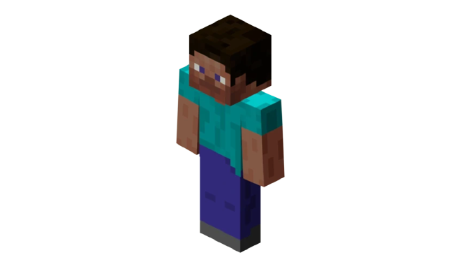
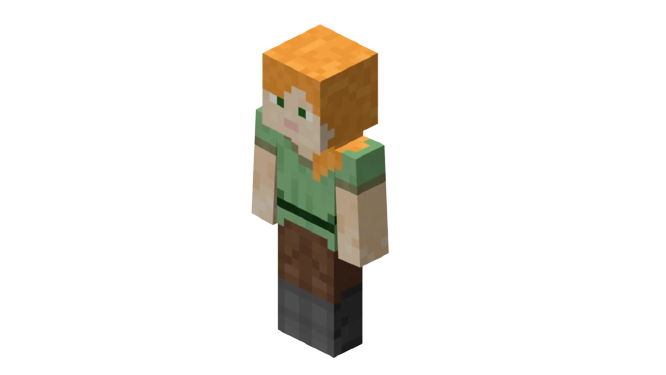
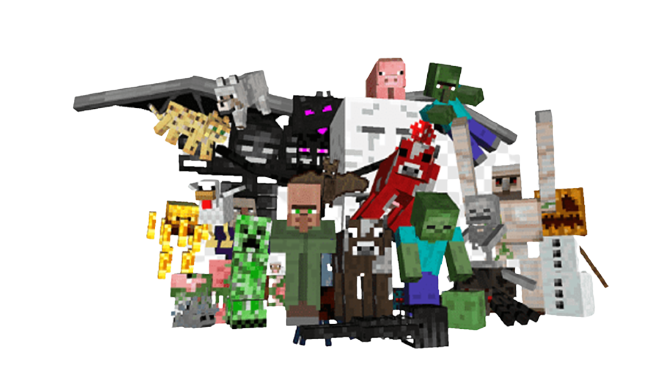

Los jugadores podrán elegir entre Steve o Alex, cada uno con tres apariencias diferentes. Además, los jugadores podrán elegir la apariencia de los personajes zombi o Enderman de Minecraft. Y todos estos personajes, aunque tienen un aspecto diferente, disponen de los mismos movimientos.
Steve es el primer personaje, es el avatar del jugador, y por raro que parezca, era el unico humano cuando se creo el juego
Alex, una chica que viene a complementar a Steve y a ampliar la diversidad que reflejan los jugadores de base
MOBS
Los mobs son personajes automatizados para que el jugador interactue con ellos, pueden ser pacificos neutrales u hostiles, hay muchos de ellos y de todos podemos sacar algun tipo de material en el juego
.PNG )
cLos mobs pacificos como los aldeanos llegaron para ocuapar presisamente aldeas y con ellas cuidar de estos espacios para que tengan recompenzas para el jugador segun la profesion que tengan, tambien hay animales que no atacan al jugador.
.PNG )
Los mobs neutrales pueden ser algunos animales que estan en sus actividades y al principio son pacificos pero si el jugador los agrede, ellos atacaran en respuesta
.PNG )
Los mobs hostiles son aquellos que cuando se acercan al jugador, este es atacado con el riezgo de morir, por esto el jugador debe protejerse en la noche y cuando visita las cuebas o algun templo.
.PNG )
.PNG)